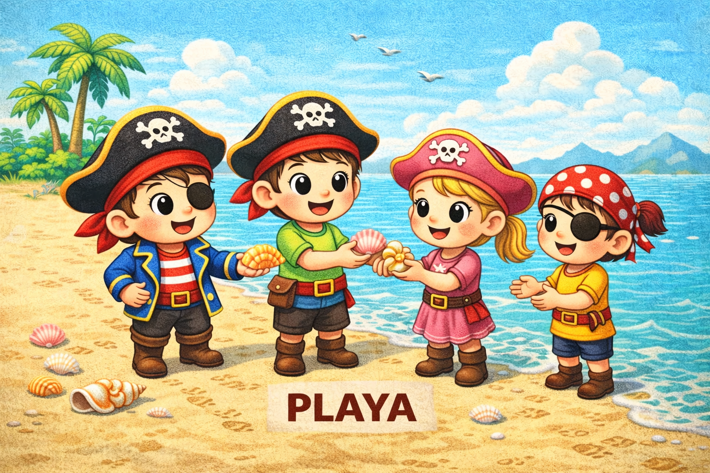
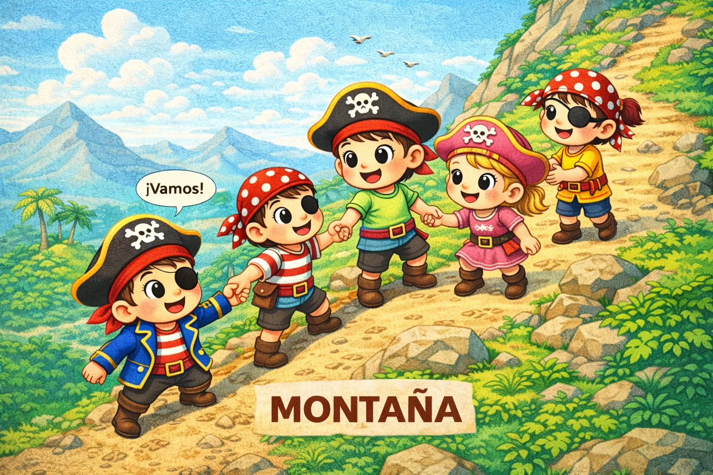

Había una vez un niño llamado Mario, que soñaba con ser pirata. Con un mapa entre las manos, él y sus compañeros miran el dibujo del tesoro.
El mapa muestra el mar, una isla, una playa y una montaña. Mario sonríe y pregunta: «¿Empezamos el viaje juntos?». Toca una de las zonas para comenzar.
Mario y sus compañeros suben a un pequeño barco y navegan por el mar. Las olas se mueven suavemente. De repente, una ola un poco grande les asusta.
Mario recuerda: «Cuando algo asusta un poquito, respiramos profundo y contamos hasta tres». Todos respiran juntos y el miedo se convierte en risas.
Uno sostiene el timón mientras otro observa las nubes. Al final del día, el mar se vuelve amigo.
Mario y sus compañeros llegan a una isla misteriosa pero amable. En la orilla ven árboles altos y flores curiosas. Para explorar, necesitan cruzar un puente de ramas.
Mario intenta solo, pero se detiene. Sus compañeros le dicen: «Pedir ayuda es valiente». Agarrados de las manos, cruzan juntos.
Descubren que trabajar en equipo es divertido.

Mario y sus compañeros caminan por una playa dorada llena de conchas y huellas de animales. Encuentran un montón de conchas brillantes.
Mario quiere cogerlas todas, pero recuerda compartir. Reparten las conchas, cada uno espera su turno y se escuchan mutuamente.
Sus risas suenan como el canto del mar.

Mario y sus compañeros llegan a una montaña alta. Parece difícil, pero saben que pueden subirla si van despacio.
Cada paso es pequeño y seguro. A veces paran para descansar y mirar las nubes. Cuando uno se cansa, los otros lo animan: «Pasito a pasito lo conseguirás».
Finalmente llegan a la cima y se abrazan felices. El camino al tesoro está listo.
Después de visitar el mar, la isla, la playa y la montaña, Mario y sus compañeros han aprendido a respirar, a pedir ayuda, a compartir y a caminar con calma.
Ahora sienten que están más unidos. El mapa brilla y les señala el camino final hacia el tesoro.
Siguiendo el mapa brillante, encuentran una piedra con un dibujo. Es una pista: «El tesoro está donde tu corazón late fuerte».
Mario se toca el pecho y sonríe. Él sabe que el corazón late cuando uno se siente feliz y cuando ayuda a los amigos.
Siguen adelante con emoción tranquila.
En una cueva escondida, Mario y sus compañeros encuentran un cofre antiguo. Lo abren despacito, escuchando el sonido de la madera.
No hay monstruos ni ruidos extraños. Solo una suave luz que sale del interior.
Su emoción crece, pero todos siguen tranquilos, esperando su turno para mirar.
Dentro del cofre hay un espejo brillante. Mario se ve reflejado como un pirata valiente. En el espejo también se dibuja a sus compañeros, unidos a su lado.
Una frase aparece: «El verdadero tesoro eres tú… y todo lo bueno que llevas dentro». Cuando ayudas a tus compañeros, brillas más.
Mario y sus compañeros guardan el espejo en su corazón. Han descubierto que lo más valioso está en ellos y en cómo se tratan.
«Gracias por acompañarnos en esta aventura», dicen mirando al horizonte.